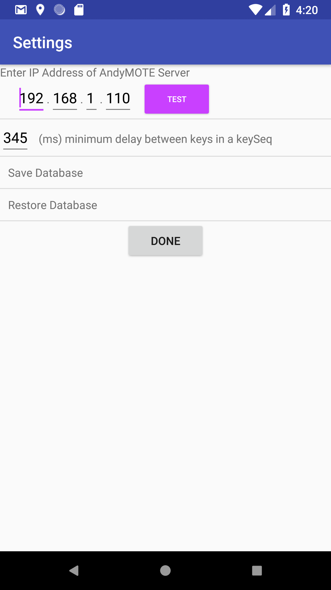

    <div class="container content">
      {% assign prev_page = "Main Screen" %}
      {% assign prev_href = "main.html" %}
      {% assign next_page = "Navigation Menu " %}
      {% assign next_href = "navigation.html" %}
      {% include usergnav.html %}

      <div class="row">
        <div class="col-lg-7">
          <h2 class="page-title">Settings</h2>
          <p>Navigate to the <i>Settings</i> view by clicking on the gear icon (&#9881;) at the top right corner of the <a href="main.html">main screen</a>.</p>
          <p>Here you can set the IP Address of the AndyMOTE Server, test the interface between the App and the Server and set the minimum delay between keys in a <i>Key Sequence</i>.</p>
          <p>A <i>Key Sequence</i> is set when you create a <a href="customkey.html">custom key</a>. AndyMOTE generates it's own <i>Key Sequences</i> when starting an Activity (switch on devices) or stopping an Activity (switch off devices). If this value is too small, some devices in your system may not respond properly and it is recommended to leave this value at 333ms unless you experience problems controlling things.</p>
          <p>Push the <i>Test</i> Button to check the connection between the App and the <a href="server.html">Server</a>. A green banner will appear at the bottom of the screen if successful. If a red banner appears then no connection could be made; in this case check that the server is up and running, the IP address is set correctly, the wifi on your Mobile/Tablet is turned on and you are connected to the same local network as the Server. </p>
          <p>The database and any custom icons you have added can be saved or restored from here. Files are stored in your device DCIM directory and will not be deleted if you uninstall the app.</p>
        </div>
        <div class="col-lg-5">
          <div class="row spacer6 d-none d-lg-block"></div>
          <p class="aligncenter"></p>
        </div>
      </div>
      {% include usergnav.html %}
    </div>